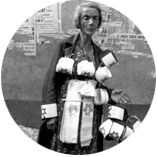

1939-1941
Expansión y Guetos
Los guetos eran áreas de las ciudades que los nazis cerraban para que allí sólo vivieran los judíos. En esos estrechos barrios los judíos estaban sometidos a la falta de espacio, al hambre, las enfermedades y a un agotador trabajo esclavo. Todos los aspectos de la vida cotidiana de las personas les fueron limitados y/o prohibidos.
Con los siguientes extractos se intentará ilustrar la vida y la muerte en los guetos:
Rzeszow, Polonia. Judíos obligados a dejar sus casas y trasladarse al gueto.
Traslado al gueto
“En toda la ciudad aparecieron carteles: - los judíos deben abandonar sus hogares y marchar al gueto... Pueden llevar una sola valija.”
Paia Wapner de Lewin - Recuerdos Imborrables
La muerte en el gueto
... “En algunas casas hay familias enteras muriendo...En la calle Wolynska No.7 diez apartamentos quedaron vacíos, todos sus habitantes murieron... Si la situación continúa así, muy pronto “el problema judío” de Varsovia”quedará resuelto”
Tras alambre de pua
20 de Mayo de 1941
“Del otro lado del alambre de púa la primavera brilla con todo su encanto. Desde mi ventana puedo ver a las muchachas con ramilletes de lilas caminando por la parte “aria” de la calle, hasta aspiro la tierna fragancia de los pimpollos recien abiertos. Pero no hay señales de la primavera en el gueto. Ni pimpollos ni mariposas.”
Mary Berg. Gueto de Varsovia
El hambre - Informe de un Médico
“Personas activas comprometidas y enérgeticas, se tranforman en criaturas apáticas y sonámbulas. No tienen fuerzas ni para comer. Mueren en la ejecucción de efuerzos físicos tales como encontrar comida , a veces incluso, con un trozo de pan en la mano. En el gueto imperaban el forcejeo entre el hambre y el tifus. Por eso, era imprescindible el contrabando para la supervivencia.”
S.Bruchfeld y P.Levine, “De esto contaréis”
“En las calles siempre había pobres que pedían limosnas y, a veces, se mprían allí mismo, en la calle, a causa del hambre o el frío ”
Zimra Kaminski

Gueto de Varsovia, Polonia. 19/9/1941. Una mujer vendiendo brazaletes.
El trabajo esclavo
“A mi padre de más de 60 años, lo atraparon en la calle y lo enviaron a las vías férreas a arrastrar durmientes. Al anochecer llegó a duras penas a casa con las manos lastimadas y con moretones azules en todo el cuerpo por los golpes recibidos de los criminales nazis, que no hacían más que empujarlos para que trabajasen más rápido.”
Paia Wapner de Lewin

Gueto de Varsovia, Polonia, 1940-1943
Solidaridad -
La comisión de la cuchara
“Cada miércoles se cocina una olla especial de sopa para el hospital de niños. La comisión de la cuchara recolecta 2 veces por semana una cucharada de azúcar o 2 de harina y avena de cada inquilino... Se recolectan papas, zanahorias, remolachas, repollos y otros para el orfanato Janusz Korczak...cada dos semanas 2 miembros son designados para realizar colectas. Los niños eran nuestra principal preocupación”
Mary Berg, El gueto de Varsovia
El hacinamiento
“ El distrito judío cubre un área de 403 hectáreas. Calculamos que viven allí 470.000 y 590.000 judíos.La densidad es de 110.800 personas por km2... El barrio judío comprende 27.000 apartamentos con una ocupación promedio de 7 personas por habitación.El barrio judío está separado del resto de la ciudad por muros de 3 metros de altura y un metro adicional de alambre de púa...”
Informe Alemán de 1941
“Cuando entré a casa me recibió mi hermanito Leibush y mostrándome el cuaderno me dijo:
- Te gustan mis deberes ?...
- Te felicito, querido;estoy muy orgullosa de tí.Lo abracé y pensé, pobrecito; ηl ya no recuerda cómo es la leche, la fruta, ni el pollo, ni tantas cosas que existen en el mundo. Solamente por dibujos los conoce. Una vez me preguntó cómo es la banana y la naranja. Yo traté de explicarle pero con poco éxito, al final le dije que cuando termine la guerra, lo primero que voy a tratar de conseguir para él, será la fruta
Si Dios quiere, trataré de no olvidármelo”
Ana Vinocur, “Sin título. Testimonio de un superviviente del holocausto judío ”